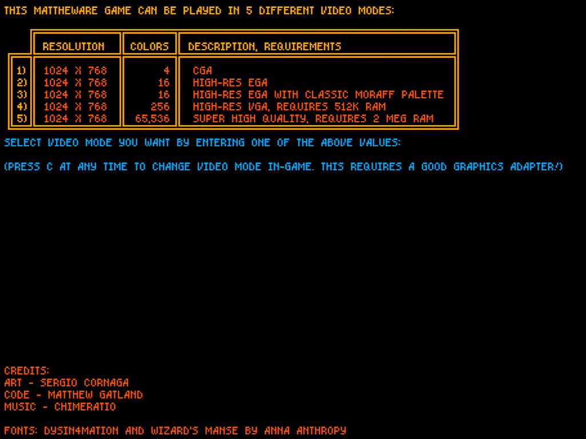
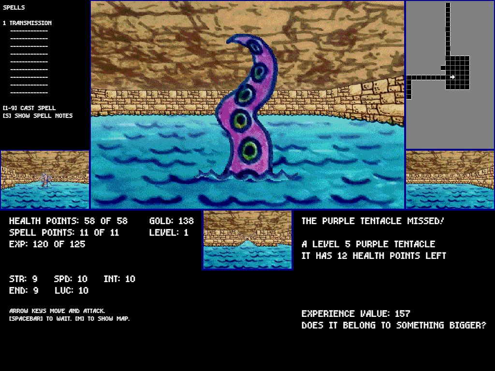
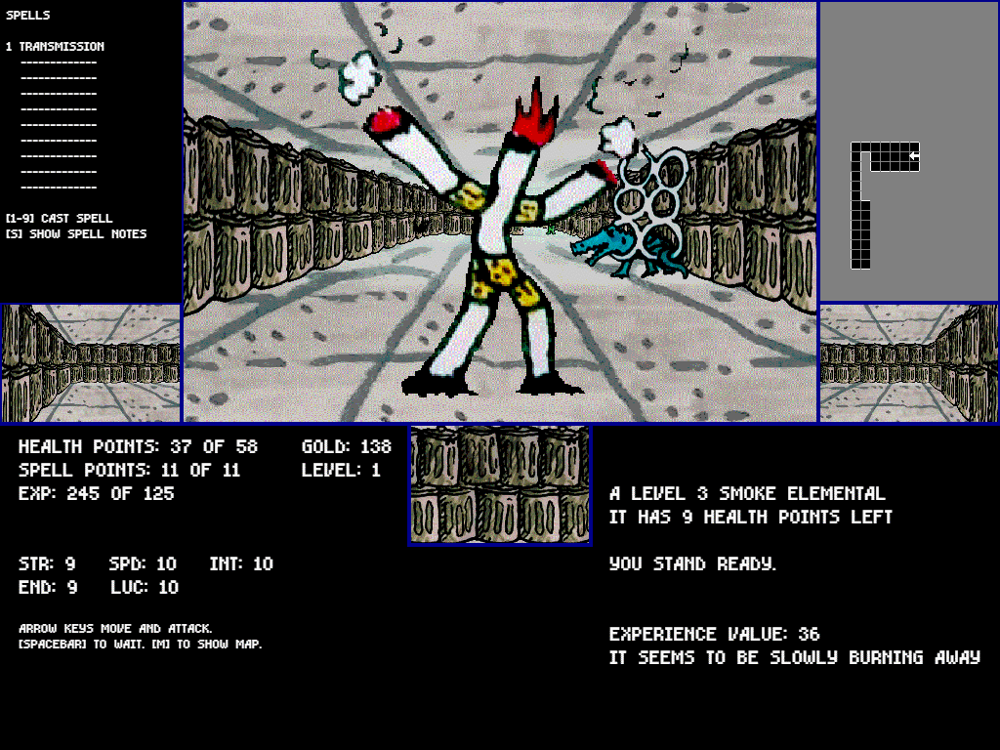
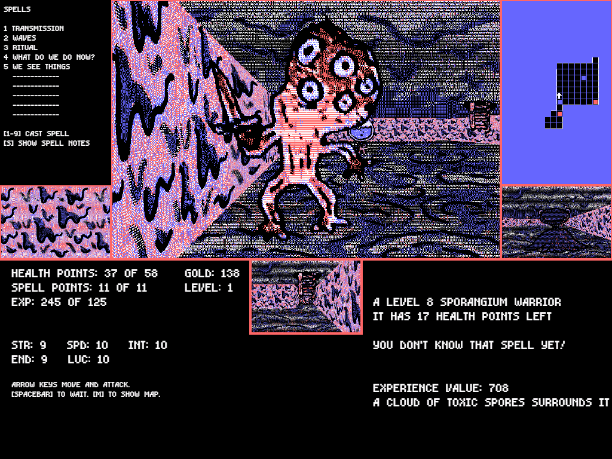

Dungeons of the Unforgotten
February 05, 2018
Exiled from your home, you must delve deeper into danger while avoiding death in this old-school dungeon crawler.
Made in a weekend for the Global Game Jam 2018, but with lots of additional polish since then.
Play Matthew's Dungeons of the Unforgotten
By me, Sergio Cornaga and Chimeratio
This is a fan sequel to Moraff’s Dungeons of the Unforgiven, a brilliant 1993 game that I enjoyed as a child. We tried to capture some of the weirdness of the original, but there is nothing quite like the magic of those old pre-internet computer games.
   